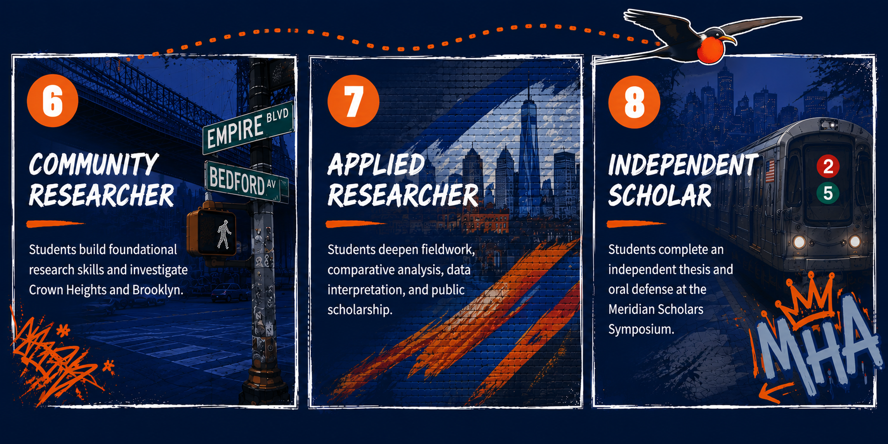

Mathematics
Illustrative Mathematics
Standards-aligned units emphasizing conceptual understanding, problem solving, mathematical discourse, visual modeling, and collaborative reasoning.
Core mathematics resource
Core program
Mathematics
Standards-aligned units emphasizing conceptual understanding, problem solving, mathematical discourse, visual modeling, and collaborative reasoning.
Mathematics technology
Interactive mathematics lessons and digital tools supporting inquiry, visual problem solving, student discussion, and real-time formative assessment.
Science · Grades 6–8
A New York State and NGSS-connected science program centered on investigation, scientific modeling, hands-on experimentation, literacy, and real-world problem solving.
Multilingual learner support
Standards-aligned social studies learning paired with the PK–12 Black Studies Curriculum to deepen historical knowledge, civic understanding, inquiry, source analysis, and the study of Black histories and experiences across grade levels.
Literacy intervention
Wit & Wisdom is a knowledge-rich English language arts curriculum that develops strong readers, writers, and critical thinkers through engaging texts, purposeful discussion, and evidence-based writing.
Literacy intervention
Structured intervention supporting decoding, multisyllabic word reading, vocabulary, fluency, and comprehension.
Mathematics intervention
Small-group mathematics support used during Academic Lab and targeted intervention periods for students needing additional practice.
Locally developed
Teacher-created interdisciplinary units connecting literature, history, identity, Crown Heights, community inquiry, public scholarship, and culturally sustaining instruction.
Signature program
A locally developed three-year progression in research questions, source evaluation, fieldwork, data analysis, academic writing, publication, and thesis defense.
Signature program
